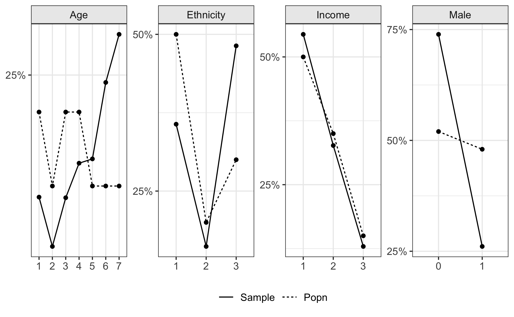
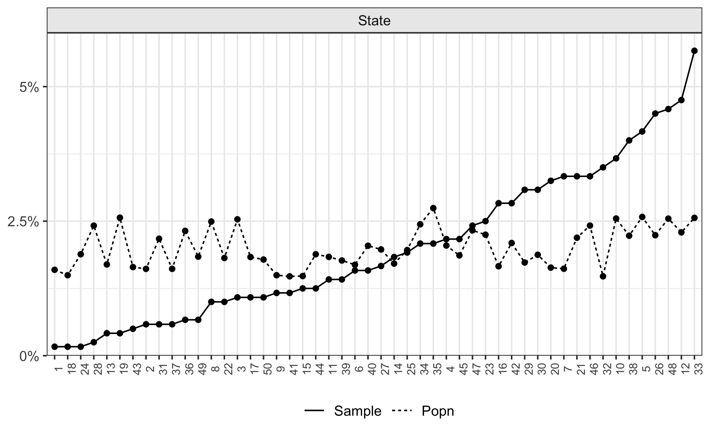
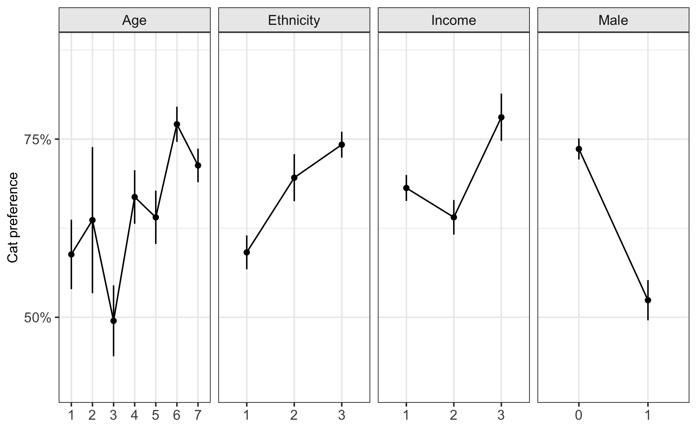
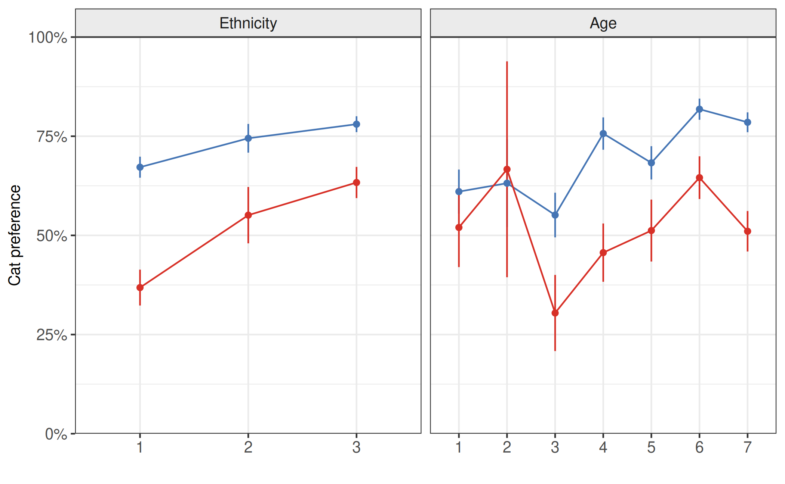
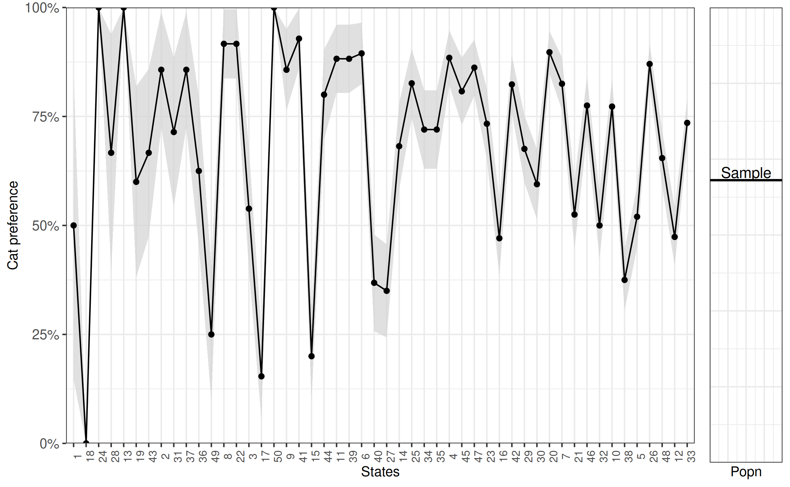
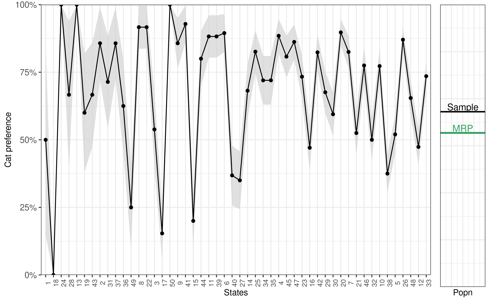
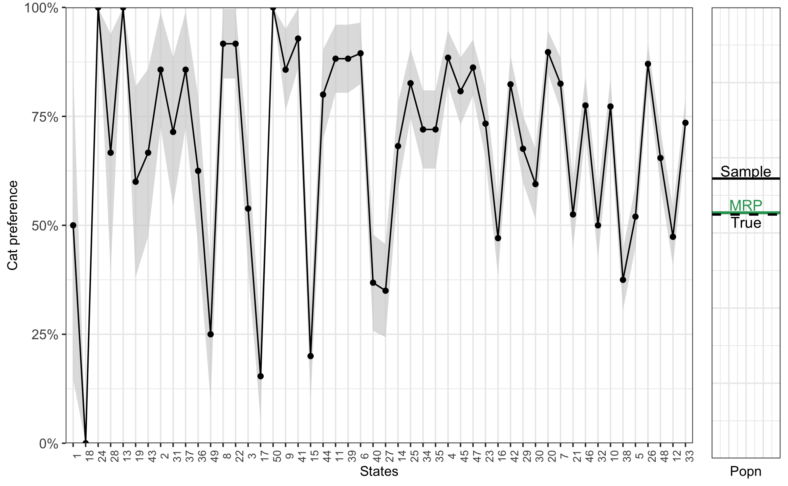

library(rstanarm)
library(ggplot2)
library(bayesplot)
theme_set(bayesplot::theme_default())
# options(mc.cores = 4) Inference about the population is one the main aims of statistical methodology. Multilevel regression and post-stratification (MRP) (Little 1993; Lax and Phillips 2009; Park, Gelman, and Bafumi 2004) has been shown to be an effective method of adjusting the sample to be more representative of the population for a set of key variables. Recent work has demonstrated the effectiveness of MRP when there are a number of suspected interactions between these variables (Ghitza and Gelman 2013), replicated by Lei, Gelman, and Ghitza (2017). While Ghitza and Gelman (2013) use approximate marginal maximum likelihood estimates; Lei, Gelman, and Ghitza (2017) implement a fully Bayesian approach through Stan.
The rstanarm package allows the user to conduct complicated regression analyses in Stan with the simplicity of standard formula notation in R. The purpose of this vignette is to demonstrate the utility of rstanarm when conducting MRP analyses. We will not delve into the details of conducting logistic regression with rstanarm as this is already covered in other vignettes.
Most of the code for data manipulation and plotting is not shown in the text but is available in the R markdown source code on GitHub.
The Data
Three data sets are simulated by the function
simulate_mrp_data(), which is defined in the source
code for this R markdown document (and printed in the appendix). The
first, sample, contains \(n\) observations from the individuals that
form our sample (i.e., \(n\) rows). For
each individual we have their age (recorded as membership within a
specific age bracket), ethnicity, income level (recorded as membership
within a specific bracket), and gender. Participants were randomly
sampled from a state.
MRP is often used for dichotomous fixed choice questions (e.g., McCain’s share of two party vote (Ghitza and Gelman 2013); support for George W Bush, (Park, Gelman, and Bafumi 2004); or support for the death penalty (Shirley and Gelman 2015)), so we will use a binary variable as the outcome in this vignette. However, MRP can also be used if there are more than two categories or if the outcome is continuous.
As this is a simple toy example, we will describe the proportion of
the population who would choose to adopt a cat over a dog, given the
opportunity. We will simulate data using a function that is included in
the appendix of this document. The simulate_mrp_data()
function simulates a sample from a much larger population. It returns a
list including the sample, population poststratification matrix and the
true population preference for cats.
mrp_sim <- simulate_mrp_data(n=1200)
str(mrp_sim)List of 3
$ sample :'data.frame': 1200 obs. of 7 variables:
..$ cat_pref: num [1:1200] 1 1 1 1 0 0 1 1 1 1 ...
..$ male : num [1:1200] 0 0 0 0 0 0 0 1 0 0 ...
..$ age : num [1:1200] 5 6 3 6 1 5 7 6 5 7 ...
..$ eth : num [1:1200] 3 1 2 1 1 1 3 3 2 3 ...
..$ income : num [1:1200] 3 1 2 1 3 1 2 1 1 1 ...
..$ state : num [1:1200] 19 45 21 47 12 38 2 20 11 34 ...
..$ id : num [1:1200] 1 2 3 4 5 6 7 8 9 10 ...
$ poststrat:'data.frame': 6300 obs. of 6 variables:
..$ male : num [1:6300] 0 0 0 0 0 0 0 0 0 0 ...
..$ eth : num [1:6300] 1 1 1 1 1 1 1 1 1 1 ...
..$ age : num [1:6300] 1 1 1 1 1 1 1 1 1 1 ...
..$ income: num [1:6300] 1 1 1 1 1 1 1 1 1 1 ...
..$ state : num [1:6300] 1 2 3 4 5 6 7 8 9 10 ...
..$ N : num [1:6300] 103741 104862 164704 133049 167578 ...
$ true_popn:'data.frame': 6300 obs. of 6 variables:
..$ male : num [1:6300] 0 0 0 0 0 0 0 0 0 0 ...
..$ eth : num [1:6300] 1 1 1 1 1 1 1 1 1 1 ...
..$ age : num [1:6300] 1 1 1 1 1 1 1 1 1 1 ...
..$ income : num [1:6300] 1 1 1 1 1 1 1 1 1 1 ...
..$ state : num [1:6300] 1 2 3 4 5 6 7 8 9 10 ...
..$ cat_pref: num [1:6300] 0.5 0.426 0.269 0.574 0.332 ... cat_pref male age eth income state id
1 1 0 5 3 3 19 1
2 1 0 6 1 1 45 2
3 1 0 3 2 2 21 3
4 1 0 6 1 1 47 4
5 0 0 1 1 3 12 5
6 0 0 5 1 1 38 6
1195 0 0 6 3 2 21 1195
1196 1 0 3 3 1 46 1196
1197 1 0 5 1 2 48 1197
1198 0 1 1 1 1 14 1198
1199 0 0 1 3 1 12 1199
1200 0 1 3 2 2 12 1200The variables describing the individual (age, ethnicity, income level and gender) will be used to match the sample to the population of interest. To do this we will need to form a post-stratification table, which contains the number of people in each possible combination of the post-stratification variables. We have 4 variables with 2 (male), 7 (age), 3 (ethnicity) and 3 (income) levels, so there are 2x7x3x3 different levels. Participants are also selected from a state (50), increasing the number of possible levels to \(6300\).
To make inference about the population, we will also need the proportion of individuals in each post stratification cell at the population level. We will use this information to update the estimate of our outcome variable from the sample so that is more representative of the population. This is particularly helpful if there is a belief that the sample has some bias (e.g., a greater proportion of females responded than males), and that the bias impacts the outcome variable (e.g., maybe women are more likely to pick a cat than men). For each possible combination of factors, the post-stratification table shows the proportion/number of the population in that cell (rather than the proportion/number in the sample in the cell).
Below we read in the poststrat data our simulated data list.
male eth age income state N
1 0 1 1 1 1 103741
2 0 1 1 1 2 104862
3 0 1 1 1 3 164704
4 0 1 1 1 4 133049
5 0 1 1 1 5 167578
6 0 1 1 1 6 109814
6295 1 3 7 3 45 10061
6296 1 3 7 3 46 13055
6297 1 3 7 3 47 12578
6298 1 3 7 3 48 13754
6299 1 3 7 3 49 9937
6300 1 3 7 3 50 9646One of the benefits of using a simulated data set for this example is that the actual population level probability of cat preference is known for each post-stratification cell. In real world data analysis, we don’t have this luxury, but we will use it later in this case study to check the predictions of the model. Details regarding the simulation of this data are available in the appendix.
male eth age income state cat_pref
1 0 1 1 1 1 0.5000000
2 0 1 1 1 2 0.4255575
3 0 1 1 1 3 0.2689414
4 0 1 1 1 4 0.5744425
5 0 1 1 1 5 0.3318122
6 0 1 1 1 6 0.6224593
6295 1 3 7 3 45 0.7502601
6296 1 3 7 3 46 0.8581489
6297 1 3 7 3 47 0.9241418
6298 1 3 7 3 48 0.6456563
6299 1 3 7 3 49 0.4255575
6300 1 3 7 3 50 0.9308616Exploring Graphically
Before we begin with the MRP analysis, we first explore the data set with some basic visualizations.
Comparing sample to population
The aim of this analysis is to obtain a population estimation of cat preference given our sample of \(4626\). We can see in the following plot the difference in proportions between the sample and the population. Horizontal panels represent each variable. Bars represent the proportion of the sample (solid) and population (dashed) in each category (represented by colour and the x-axis). For ease of viewing, we ordered the states in terms of the proportion of the sample in that state that was observed. We will continue this formatting choice thoughout this vignette.
sample$state <- factor(sample$state, levels=1:50)
sample$state <- with(sample, factor(state, levels=order(table(state))))
true_popn$state <- factor(true_popn$state,levels = levels(sample$state))
poststrat$state <- factor(poststrat$state,levels = levels(sample$state))
Effect of the post-stratification variable on preference for cats
Secondly; we consider the evidence of different proportions across different levels of a post-stratification variable; which we should consider for each of the post-stratification variables. Here we break down the proportion of individuals who would prefer a cat (y-axis) by different levels (x-axis) of the post-stratification variable (horizontal panels). We can see from this figure that there appears to be differences in cat preference for the different levels of post-stratification variables. Given the previous figure, which suggested that the sample was different to the population in the share of different levels of theses variables, this should suggest that using the sample to estimate cat preference may not give accurate estimates of cat preference in the population.

Interaction effect
Thirdly, we demonstrate visually that there is an interaction between age and gender and compare to a case where there is no interaction. Here a simulated interaction effect between age (x-axis) and gender (color), right panel, is contrasted with no interaction effect (left panel). While both panels demonstrate a difference between the genders on the outcome variable (y-axis), only the second panel shows this difference changing with the variable on the x-axis.

Design effect
Lastly we look at the difference in cat preference between states, which will form the basis for the multi-level component of our analysis. Participants were randomly selected from particular states. Plotting the state (x-axis) against the overall proportion of participants who prefer cats (y-axis) demonstrates state differences. The downward slope is because we ordered the x-axis by the proportion of cat preference for ease of viewing. We also include second plot with a horizontal line to represent the overall preference for cats in the total population, according to the sample.

MRP with rstanarm
From visual inspection, it appears that different levels of post-stratification variable have different preferences for cats. Our survey also appears to have sampling bias; indicating that some groups were over/under sampled relative to the population. The net effect of this is that we could not make good population level estimates of cat preference straight from our sample. Our aim is to infer the preference for cats in the population using the post-stratification variables to account for systematic differences between the sample and population. Using rstanarm, this becomes a simple procedure.
The first step is to use a multi-level logistic regression model to predict preference for cats in the sample given the variables that we will use to post-stratify. Note that we actually have more rows in the post-stratification matrix than the we have observed units, so there are some cells in the poststrat matrix that we don’t observe. We can use a multi-level model to partially pool information across the different levels within each variable to assist with this. In the model described below, we use a fixed intercept for gender, and hierarchically modeled varying intercepts for each of the other factors.
Let \(\theta_{j}\) denote the preference for cats in the \(j\)th poststratification cell. The non-hierarchical part of the model can be written as
\[\theta_j= logit^{-1}(X_{j}\beta),\]
where here \(X\) only contains an indicator for male or female and an interaction term with age.
Adding the varying intercepts for the other variables the model becomes
\[ \theta_j = logit^{-1}( X_{j}\beta + \alpha_{\rm state[j]}^{\rm state} + \alpha_{\rm age[j]}^{\rm age} + \alpha_{\rm eth[j]}^{\rm eth} + \alpha_{\rm inc[j]}^{\rm inc} ) \] with
$$ \[\begin{align*} \alpha_{\rm state[j]}^{\rm state} & \sim N(0,\sigma^{\rm state}) \\ \alpha_{\rm age[j]}^{\rm age} & \sim N(0,\sigma^{\rm age})\\ \alpha_{\rm eth[j]}^{\rm eth} & \sim N(0,\sigma^{\rm eth})\\ \alpha_{\rm inc[j]}^{\rm inc} &\sim N(0,\sigma^{\rm inc}) \\ \end{align*}\]
$$
Each of \(\sigma^{\rm state}\), \(\sigma^{\rm age}\), \(\sigma^{\rm eth}\), and \(\sigma^{\rm inc}\) are estimated from the data (in this case using rstanarm’s default priors), which is beneficial as it means we share information between the levels of each variable and we can prevent levels with with less data from being too sensitive to the few observed values. This also helps with the levels we don’t observe at all it will use information from the levels that we do observe. For more on the benefits of this type of model, see Gelman et al. (2005), and see Ghitza and Gelman (2013) and Si et al. (2017) for more complicated extensions that involve deep interactions and structured prior distributions.
Here is the model specified using the stan_glmer()
function in rstanarm, which uses the same formula syntax as the
glmer() function from the lme4 package:
fit <- stan_glmer(
cat_pref ~ factor(male) + factor(male) * factor(age) +
(1 | state) + (1 | age) + (1 | eth) + (1 | income),
family = binomial(link = "logit"),
data = sample
)
print(fit)stan_glmer
family: binomial [logit]
formula: cat_pref ~ factor(male) + factor(male) * factor(age) + (1 | state) +
(1 | age) + (1 | eth) + (1 | income)
observations: 1200
------
Median MAD_SD
(Intercept) 0.8 0.9
factor(male)1 -0.3 0.6
factor(age)2 -0.2 1.0
factor(age)3 -0.5 0.8
factor(age)4 0.6 0.8
factor(age)5 0.3 0.8
factor(age)6 1.1 0.9
factor(age)7 0.8 0.8
factor(male)1:factor(age)2 0.3 1.7
factor(male)1:factor(age)3 -0.8 0.8
factor(male)1:factor(age)4 -1.3 0.7
factor(male)1:factor(age)5 -1.0 0.7
factor(male)1:factor(age)6 -0.6 0.7
factor(male)1:factor(age)7 -1.1 0.6
Error terms:
Groups Name Std.Dev.
state (Intercept) 1.13
age (Intercept) 1.21
eth (Intercept) 0.91
income (Intercept) 0.73
Num. levels: state 50, age 7, eth 3, income 3
------
* For help interpreting the printed output see ?print.stanreg
* For info on the priors used see ?prior_summary.stanregAs a first pass to check whether the model is performing well, note that there are no warnings about divergences, failure to converge or tree depth. If these errors do occur, more information on how to alleviate them is provided here.
Population Estimate
From this we get a summary of the baseline log odds of cat preference
at the first element of each factor (i.e., male = 0, age = 1) for each
state, plus estimates on variability of the intercept for state,
ethnicity, age and income. While this is interesting, currently all we
have achieved is a model that predicts cat preference given a number of
factor-type predictors in a sample. What we would like to do is estimate
cat preference in the population by accounting for differences between
our sample and the population. We use the
posterior_linpred() function to obtain posterior estimates
for cat preference given the proportion of people in the
population in each level of the factors included in the
model.
posterior_prob <- posterior_linpred(fit, transform = TRUE, newdata = poststrat)
poststrat_prob <- posterior_prob %*% poststrat$N / sum(poststrat$N)
model_popn_pref <- c(mean = mean(poststrat_prob), sd = sd(poststrat_prob))
round(model_popn_pref, 3) mean sd
0.568 0.024 We can compare this to the estimate we would have made if we had just used the sample:
[1] 0.681We can also add it to the last figure to graphically represent the difference between the sample and population estimate.
compare2 <- compare2 +
geom_hline(yintercept = model_popn_pref[1], colour = '#2ca25f', size = 1) +
geom_text(aes(x = 5.2, y = model_popn_pref[1] + .025), label = "MRP", colour = '#2ca25f')
bayesplot_grid(compare, compare2,
grid_args = list(nrow = 1, widths = c(8, 1)))
As this is simulated data, we can look directly at the preference for cats that we simulated from to consider how good our estimate is.
[1] 0.561Which we will also add to the figure. 
Our MRP estimate is barely off, while our sample estimate is off by more than 10 percentage points. This indicates that using MRP helps to make estimates for the population from our sample that are more accurate.
Estimates for states
One of the nice benefits of using MRP to make inference about the population is that we can change the population of interest. In the previous paragraph we inferred the preference for cats in the whole population. We can also infer the preference for cats in a single state. In the following code we post-stratify for each state in turn. Note that we can reuse the predictive model from the previous step and update for different population demographics. This is particularly useful for complicated cases or large data sets where the model takes some time to fit.
As before, first we use the proportion of the population in each combination of the post-stratification groups to estimate the proportion of people who preferred cats in the population, only in this case the population of interest is the state.
state_df <- data.frame(
State = 1:50,
model_state_sd = rep(-1, 50),
model_state_pref = rep(-1, 50),
sample_state_pref = rep(-1, 50),
true_state_pref = rep(-1, 50),
N = rep(-1, 50)
)
for(i in 1:length(levels(as.factor(poststrat$state)))) {
poststrat_state <- poststrat[poststrat$state == i, ]
posterior_prob_state <- posterior_linpred(
fit,
transform = TRUE,
draws = 1000,
newdata = as.data.frame(poststrat_state)
)
poststrat_prob_state <- (posterior_prob_state %*% poststrat_state$N) / sum(poststrat_state$N)
#This is the estimate for popn in state:
state_df$model_state_pref[i] <- round(mean(poststrat_prob_state), 4)
state_df$model_state_sd[i] <- round(sd(poststrat_prob_state), 4)
#This is the estimate for sample
state_df$sample_state_pref[i] <- round(mean(sample$cat_pref[sample$state == i]), 4)
#And what is the actual popn?
state_df$true_state_pref[i] <-
round(sum(true_popn$cat_pref[true_popn$state == i] * poststrat_state$N) /
sum(poststrat_state$N), digits = 4)
state_df$N[i] <- length(sample$cat_pref[sample$state == i])
}
state_df[c(1,3:6)] State model_state_pref sample_state_pref true_state_pref N
1 1 0.5068 0.5000 0.5966 2
2 2 0.6573 0.8571 0.5315 7
3 3 0.4462 0.5385 0.3803 13
4 4 0.7616 0.8846 0.6590 26
5 5 0.4232 0.5200 0.4439 50
6 6 0.6853 0.8947 0.6982 19
7 7 0.7119 0.8250 0.6386 40
8 8 0.6987 0.9167 0.7850 12
9 9 0.7203 0.8571 0.6788 14
10 10 0.6153 0.7727 0.5966 44
11 11 0.7272 0.8824 0.7850 17
12 12 0.3860 0.4737 0.4012 57
13 13 0.7191 1.0000 0.7690 5
14 14 0.6128 0.6818 0.5966 22
15 15 0.2034 0.2000 0.1181 15
16 16 0.3838 0.4706 0.3599 34
17 17 0.2181 0.1538 0.2169 13
18 18 0.3444 0.0000 0.2169 2
19 19 0.4733 0.6000 0.4656 5
20 20 0.7992 0.8974 0.7850 39
21 21 0.3825 0.5250 0.3599 40
22 22 0.7661 0.9167 0.8755 12
23 23 0.6042 0.7333 0.5751 30
24 24 0.6389 1.0000 0.7690 2
25 25 0.7445 0.8261 0.8002 23
26 26 0.7605 0.8704 0.7524 54
27 27 0.2621 0.3500 0.2657 20
28 28 0.5807 0.6667 0.4656 3
29 29 0.5356 0.6757 0.5095 37
30 30 0.5152 0.5946 0.5315 37
31 31 0.6151 0.7143 0.7350 7
32 32 0.4203 0.5000 0.3399 42
33 33 0.6095 0.7353 0.6178 68
34 34 0.5805 0.7200 0.4656 25
35 35 0.5904 0.7200 0.6590 25
36 36 0.5317 0.6250 0.5751 8
37 37 0.6940 0.8571 0.8855 7
38 38 0.2926 0.3750 0.3205 48
39 39 0.7196 0.8824 0.8533 17
40 40 0.3245 0.3684 0.2657 19
41 41 0.7710 0.9286 0.6982 14
42 42 0.6794 0.8235 0.5751 34
43 43 0.5300 0.6667 0.5315 6
44 44 0.6567 0.8000 0.4439 15
45 45 0.6612 0.8077 0.5315 26
46 46 0.6541 0.7750 0.6788 40
47 47 0.7236 0.8621 0.8002 29
48 48 0.5144 0.6545 0.4224 55
49 49 0.2334 0.2500 0.2487 8
50 50 0.8228 1.0000 0.8146 13Here we similar findings to when we considered the population as whole. While estimates for cat preference (in percent) using the sample are off by
round(100 * c(
mean = mean(abs(state_df$sample_state_pref-state_df$true_state_pref), na.rm = TRUE),
max = max(abs(state_df$sample_state_pref-state_df$true_state_pref), na.rm = TRUE)
))mean max
14 36 the MRP based estimates are much closer to the actual percentage,
round(100 * c(
mean = mean(abs(state_df$model_state_pref-state_df$true_state_pref)),
max = max(abs(state_df$model_state_pref-state_df$true_state_pref))
))mean max
6 21 and especially when the sample size for that population is relatively small. This is easier to see graphically, so we will continue to add additional layers to the previous figure. Here we add model estimates,represented by triangles, and the true population cat preference, represented as transparent circles.

Other formats
Alternate methods of modelling
Previously we used a binary outcome variable. An alternative form of
this model is to aggregate the data to the poststrat cell level and
model the number of successes (or endorsement of cat preference in this
case) out of the total number of people in that cell. To do this we need
to create two n x 1 outcome variables, N_cat_pref (number
in cell who prefer cats) and N (number in the poststrat
cell).
# not evaluated to avoid dependency on tidyverse
sample_alt <- sample %>%
group_by(male, age, income, state, eth) %>%
summarise(N_cat_pref = sum(cat_pref), N = n()) %>%
ungroup()We then can use these two outcome variables to model the data using the binomial distribution.
fit2 <- stan_glmer(
cbind(N_cat_pref, N - N_cat_pref) ~ factor(male) + factor(male) * factor(age) +
(1 | state) + (1 | age) + (1 | eth) + (1 | income),
family = binomial("logit"),
data = sample_alt,
refresh = 0
)
print(fit2)stan_glmer
family: binomial [logit]
formula: cbind(N_cat_pref, N - N_cat_pref) ~ factor(male) + factor(male) *
factor(age) + (1 | state) + (1 | age) + (1 | eth) + (1 |
income)
observations: 940
------
Median MAD_SD
(Intercept) 0.8 1.0
factor(male)1 -0.4 0.6
factor(age)2 -0.3 1.1
factor(age)3 -0.5 0.9
factor(age)4 0.6 0.9
factor(age)5 0.3 0.8
factor(age)6 1.0 0.9
factor(age)7 0.8 0.9
factor(male)1:factor(age)2 0.3 1.8
factor(male)1:factor(age)3 -0.8 0.8
factor(male)1:factor(age)4 -1.3 0.7
factor(male)1:factor(age)5 -1.0 0.7
factor(male)1:factor(age)6 -0.5 0.7
factor(male)1:factor(age)7 -1.1 0.6
Error terms:
Groups Name Std.Dev.
state (Intercept) 1.11
age (Intercept) 1.22
eth (Intercept) 0.92
income (Intercept) 0.73
Num. levels: state 50, age 7, eth 3, income 3
------
* For help interpreting the printed output see ?print.stanreg
* For info on the priors used see ?prior_summary.stanregLike before, we can use the posterior_linpred() function
to obtain an estimate of the preference for cats in the population.
posterior_prob_alt <- posterior_linpred(fit2, transform = TRUE, newdata = poststrat)
poststrat_prob_alt <- posterior_prob_alt %*% poststrat$N / sum(poststrat$N)
model_popn_pref_alt <- c(mean = mean(poststrat_prob_alt), sd = sd(poststrat_prob_alt))
round(model_popn_pref_alt, 3) mean sd
0.568 0.024 As we should, we get the same answer as when we fit the model using the binary outcome. The two ways are equivalent, so we can use whichever form is most convenient for the data at hand. More details on these two forms of binomial models are available here.
Appendix
Examples of other formulas
The formulas for fitting so-called “mixed-effects” models in rstanarm are the same as those in the lme4 package. A table of examples can be found in Table 2 of the vignette for the lme4 package, available here.
Code to simulate the data
Here is the source code for the simulate_mrp_function(),
which is based off of some code provided by Aki Vehtari.
print(simulate_mrp_data)function (n)
{
J <- c(2, 3, 7, 3, 50)
poststrat <- as.data.frame(array(NA, c(prod(J), length(J) +
1)))
colnames(poststrat) <- c("male", "eth", "age", "income",
"state", "N")
count <- 0
for (i1 in 1:J[1]) {
for (i2 in 1:J[2]) {
for (i3 in 1:J[3]) {
for (i4 in 1:J[4]) {
for (i5 in 1:J[5]) {
count <- count + 1
poststrat[count, 1:5] <- c(i1 - 1, i2, i3,
i4, i5)
}
}
}
}
}
p_male <- c(0.52, 0.48)
p_eth <- c(0.5, 0.2, 0.3)
p_age <- c(0.2, 0.1, 0.2, 0.2, 0.1, 0.1, 0.1)
p_income <- c(0.5, 0.35, 0.15)
p_state_tmp <- runif(50, 10, 20)
p_state <- p_state_tmp/sum(p_state_tmp)
poststrat$N <- 0
for (j in 1:prod(J)) {
poststrat$N[j] <- round(2.5e+08 * p_male[poststrat[j,
1] + 1] * p_eth[poststrat[j, 2]] * p_age[poststrat[j,
3]] * p_income[poststrat[j, 4]] * p_state[poststrat[j,
5]])
}
p_response_baseline <- 0.01
p_response_male <- c(2, 0.8)/2.8
p_response_eth <- c(1, 1.2, 2.5)/4.7
p_response_age <- c(1, 0.4, 1, 1.5, 3, 5, 7)/18.9
p_response_inc <- c(1, 0.9, 0.8)/2.7
p_response_state <- rbeta(50, 1, 1)
p_response_state <- p_response_state/sum(p_response_state)
p_response <- rep(NA, prod(J))
for (j in 1:prod(J)) {
p_response[j] <- p_response_baseline * p_response_male[poststrat[j,
1] + 1] * p_response_eth[poststrat[j, 2]] * p_response_age[poststrat[j,
3]] * p_response_inc[poststrat[j, 4]] * p_response_state[poststrat[j,
5]]
}
people <- sample(prod(J), n, replace = TRUE, prob = poststrat$N *
p_response)
n_cell <- rep(NA, prod(J))
for (j in 1:prod(J)) {
n_cell[j] <- sum(people == j)
}
coef_male <- c(0, -0.3)
coef_eth <- c(0, 0.6, 0.9)
coef_age <- c(0, -0.2, -0.3, 0.4, 0.5, 0.7, 0.8, 0.9)
coef_income <- c(0, -0.2, 0.6)
coef_state <- c(0, round(rnorm(49, 0, 1), 1))
coef_age_male <- t(cbind(c(0, 0.1, 0.23, 0.3, 0.43, 0.5,
0.6), c(0, -0.1, -0.23, -0.5, -0.43, -0.5, -0.6)))
true_popn <- data.frame(poststrat[, 1:5], cat_pref = rep(NA,
prod(J)))
for (j in 1:prod(J)) {
true_popn$cat_pref[j] <- plogis(coef_male[poststrat[j,
1] + 1] + coef_eth[poststrat[j, 2]] + coef_age[poststrat[j,
3]] + coef_income[poststrat[j, 4]] + coef_state[poststrat[j,
5]] + coef_age_male[poststrat[j, 1] + 1, poststrat[j,
3]])
}
y <- rbinom(n, 1, true_popn$cat_pref[people])
male <- poststrat[people, 1]
eth <- poststrat[people, 2]
age <- poststrat[people, 3]
income <- poststrat[people, 4]
state <- poststrat[people, 5]
sample <- data.frame(cat_pref = y, male, age, eth, income,
state, id = 1:length(people))
for (i in 1:ncol(poststrat)) {
poststrat[, i] <- as.numeric(poststrat[, i])
}
for (i in 1:ncol(true_popn)) {
true_popn[, i] <- as.numeric(true_popn[, i])
}
for (i in 1:ncol(sample)) {
sample[, i] <- as.numeric(sample[, i])
}
list(sample = sample, poststrat = poststrat, true_popn = true_popn)
}